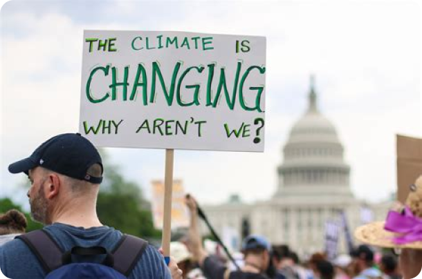
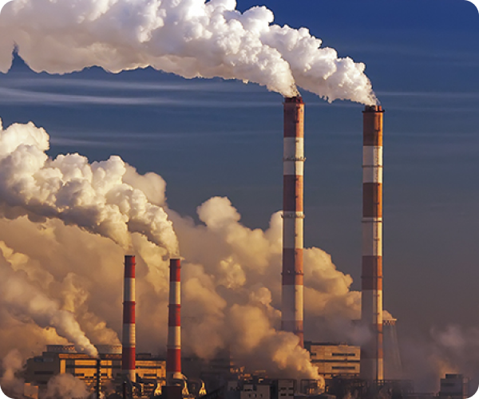
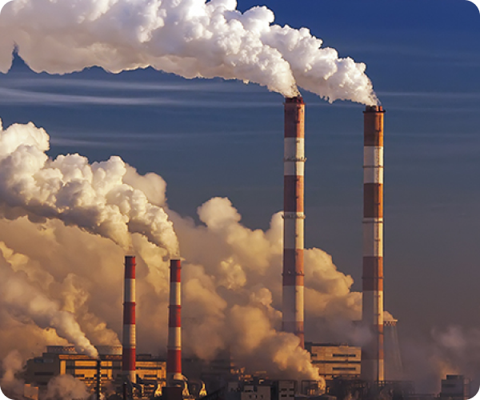

COMO OS ESTUDANTES PODEM AGIR?
Os estudantes desempenham um papel fundamental na luta contra as mudanças climáticas.
Cada ação, por menor que seja, contribui para um impacto maior na luta contra as mudanças climáticas. Os estudantes, com sua energia e criatividade, podem ser catalisadores de mudança significativa.
As formas que os estudantes podem agir para ajudar no movimento contra as mudanças climáticas, são algumas:
- Educação e conscientização: Estudantes podem aprender mais sobre as mudanças climáticas, seus impactos e soluções.
Eles podem compartilhar esse conhecimento com colegas e promover a conscientização;
- Redução do consumo: Evitar o desperdício de energia e recursos é essencial. Os estudantes podem usar transporte público, economizar água e eletricidade
e reduzir o uso de plástico descartável;
- Engajamento político: Participar de movimentos estudantis e pressionar por políticas ambientais mais rigorosas é uma maneira eficaz de fazer a diferença;
- Promoção de práticas sustentáveis: Os estudantes podem incentivar a universidade a adotar práticas sustentáveis, como reciclagem,
uso de energias renováveis e redução das emissões de carbono;
- Pesquisa e inovação: Estudantes podem se envolver em pesquisas sobre soluções climáticas e desenvolver projetos inovadores para enfrentar os desafios ambientais.


 
